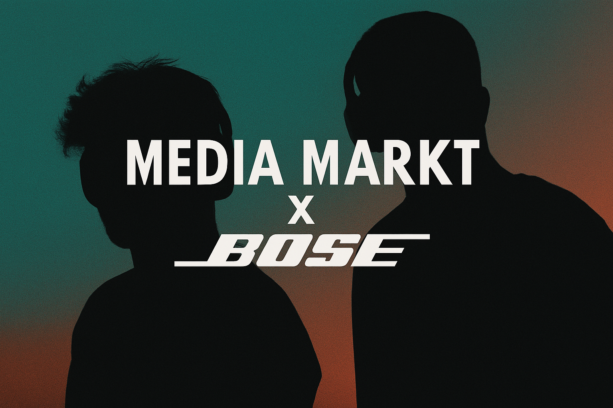

Virales Video, tote Audience.
Das passiert öfter als du denkst. Ein Video explodiert — 200.000 Views, 5.000 neue Follower. Zwei Wochen später: die nächsten Videos performen schlechter als vor dem Viral-Moment. Die neuen Follower interagieren nicht. Der Algorithmus verlässt dich wieder.
Viralität ist kein Fundament. Sie ist ein Ausreißer. Wer auf Ausreißer baut, baut auf Sand. Ich habe das selbst erlebt — und ich habe es bei fast jedem Kunden beobachtet, bevor wir angefangen haben, anders zu denken.
Sichtbarkeit, die bleibt, entsteht nicht durch einen Moment. Sie entsteht durch hundert Momente, die niemand einzeln bemerkt.
Was „Sichtbarkeit" wirklich bedeutet
Die meisten denken bei Sichtbarkeit an Follower-Zahlen. Ich denke an etwas anderes: Wirst du von den richtigen Menschen zur richtigen Zeit gefunden?
Das ist eine andere Frage. Sie verschiebt den Fokus von Quantität zu Positionierung. Ein Account mit 3.000 hochrelevanten Followern, der regelmäßig Aufträge bekommt, ist sichtbarer als ein Account mit 50.000, der niemanden konvertiert.
- Klarheit vor Frequenz: Lieber einmal pro Woche klar kommunizieren, was du machst und für wen — als täglich Rauschen produzieren.
- Tiefe vor Breite: Spezialisierung macht dich suchbar. Wer alles kann, wird für nichts gebucht.
- Konsistenz als Signal: Wer dich drei Monate lang verfolgt und weiß, was er bekommt — der bucht. Wer überrascht wird, zögert.

Der Unterschied zwischen Präsenz und Aktivität
Viele Creator verwechseln Aktivität mit Präsenz. Sie posten täglich, reagieren auf jeden Trend, sind „immer online" — aber sie hinterlassen keinen Abdruck.
Präsenz ist, wenn jemand deinen Namen hört und sofort ein Bild im Kopf hat. Ein Gefühl. Eine Erwartung. Eine Assoziation. Das baut sich nicht durch Quantität auf — es baut sich durch Wiederholung von etwas Erkennbarem auf.
Gregor Schade hat mir nach unserer Zusammenarbeit etwas gesagt, das ich nicht vergessen habe: „Man spürt in jedem Video dasselbe — auch wenn jedes Video anders ist." Das ist Präsenz. Das ist das Ziel.
Wie ich Strategie aufbaue — für mich und für Kunden
Der erste Schritt ist immer: Was soll in einem Jahr über dich gesagt werden? Nicht was du zeigst — was gesagt wird. Das ist der Unterschied zwischen Selbstdarstellung und Positionierung.
Dann arbeiten wir rückwärts. Was müssen Menschen in den nächsten 12 Monaten von dir sehen, hören und fühlen, damit dieser Satz irgendwann Realität wird? Daraus entsteht kein Posting-Plan — daraus entsteht eine Richtung.
Richtung ist das Einzige, das überlebt. Strategien ändern sich. Plattformen ändern sich. Wer du bist und wofür du stehst — das nicht.
Baue keine Audience. Baue eine Überzeugung. Die Audience folgt.